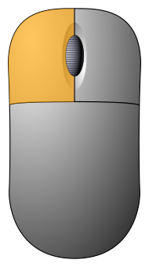
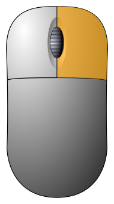
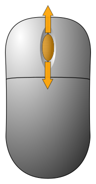

RESET
MAP
NORTH
OVERLOOK
X Y elevation
click to add points
Equirectangular Mars 2000 Sphere projection
NASA/JPL-Caltech/Mars2020 HiRISE/T. Appéré (c)2021 Andreas Plesch
5.0 x v.e.
1.50 contrast
help
 double click to recenter
 right drag or wheel to zoom
 middle drag to pan